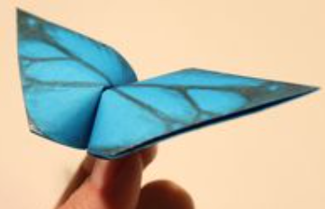

Step 1:
Start with a square piece of origami paper.
If you only have regular 8.5x11 paper, follow these instructions to make a square sheet.
You can also use these colorful Printable Origami Paper. |
Step 2: Fold the paper in half by folding the top corner to the bottom corner. You should have an upside down triangle. |
Step 3: Fold part of the top down so that the edge is about halfway down. Don't make this flap too thin because this will become the wings. |
Step 4: Turn the paper over. |
Step 5: Take the bottom corner of the top layer and fold it up like this. |
Step 6: Fold the figure in half by folding the left side over to the right. |
Step 7: Now fold that same flap back
like this to make one of the wings. |
Step 8: Fold the other wing back also. |
Step 9: Push the center of the head in and flatten.
This is called an inside reverse fold. |
Step 10: And tada! You have yourself a bird.
Now set it free! Just kidding. Don't throw it in the air. It will just fall down and you'll be disappointed. |
 |
|
Step 1: Start with a square sheet of origami paper, color side down.
If you only have regular rectangular paper, follow instructions on how to make origami paper. |
Step 2: Simply fold the bottom half to the top half,
making sure the edges meet, then unfold. |
Step 3: Fold the top and bottom edges to meet at the center. |
Step 4: Fold in all four corners so their edges meet at the center horizontal crease. |
Step 5: Fold down the top half. |
Step 6: Fold the center of the bottom half to the top half.
Crease about one inch (2.5 cm) of the center only with your fingernail.
Do not crease all the way.
your finger and there should be a crease in the center only. |
Step 7: Turn the paper over.
Go to Next page to continue learning how to make an origami butterfly that flaps. |
Step 8: Place a finger on top of the center of the paper and with your other hand, wrap the paper snugly around your finger. |
Step 9: Remove your finger and you should have a loop like this. |
Step 10: Use a fingernail and poke in the center of the bottom of the loop. |
Step 11: With your forefinger and thumb, grab both ends of the loop holes and pinch them together.
Pinch and release to make the butterfly flap! |
Step 12: Draw and design the butterfly wings and email your origami butterfly to me so I can show it off to everybody! |
 |
 |